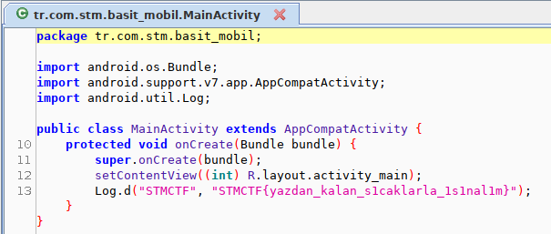
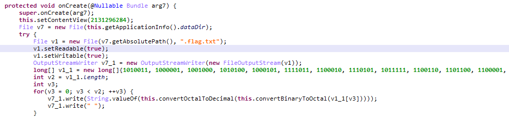
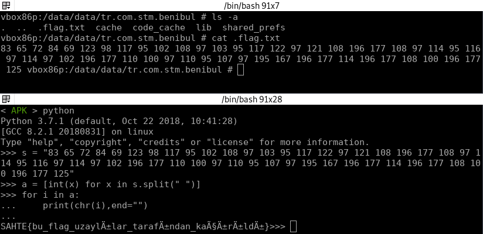
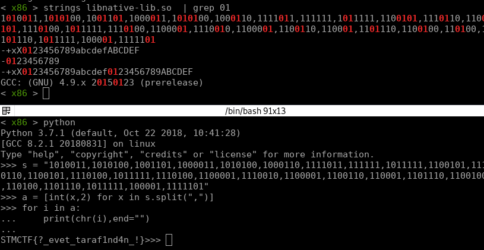
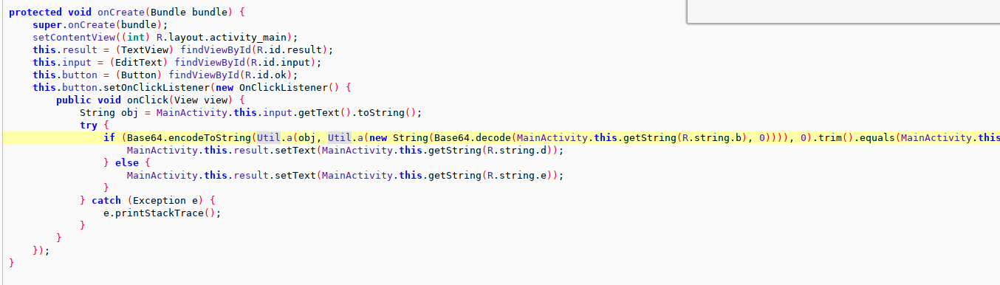
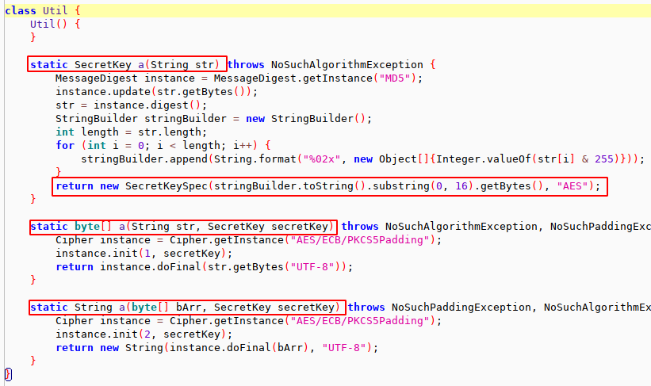
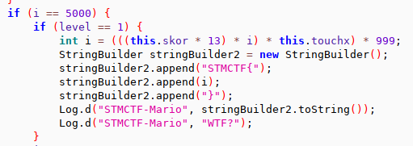
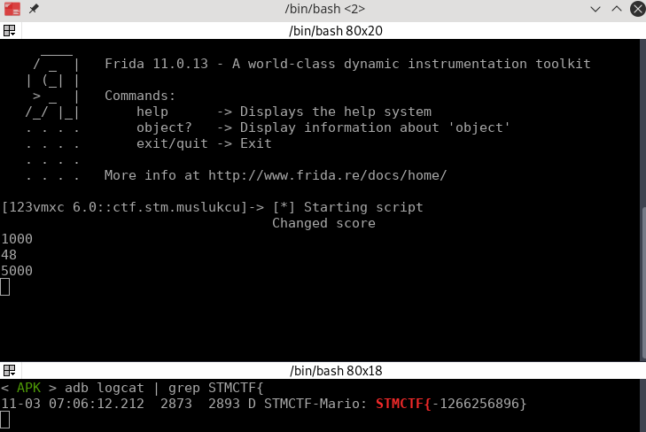
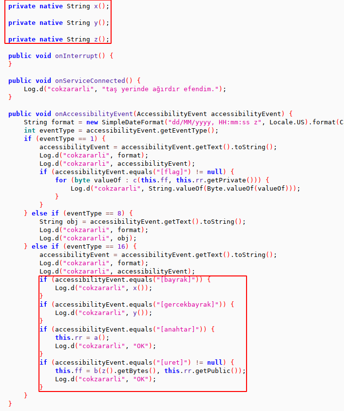
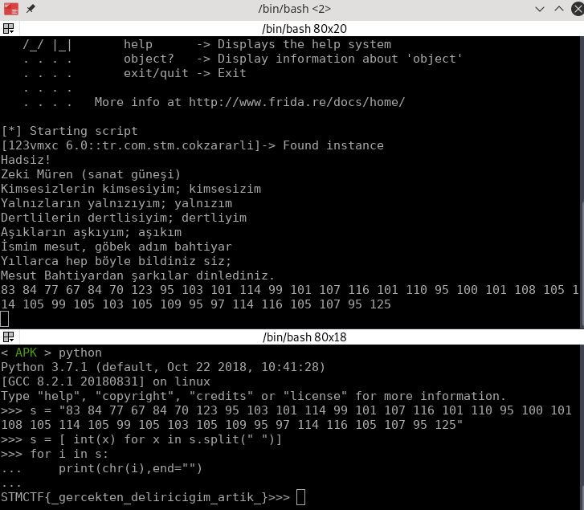

STMCTF18-Final Mobil Sorulari
basitmobil
jadxte açtığımda flag zaten karşımda.

Flag : STMCTF{yazdan_kalan_s1caklarla_1s1nal1m}
benibul
Apkyı jeb’de açıyorum görüyorumki .flag.txt diye bir dosya oluşturuyor. İçine de binary->octal->decimal dönüşümünü yapıp değeri yazıyor.

Dosyaya bakmadan direk datayı alıp binary -> asci değerini de bakabilirsiniz. Dosyaya adb shell ile emulatore bağlanıp bakalım. (v24 istiyor ona göre vm açmak lazım)

Bu binary değerleri sahteymiş demekki apknın başka bir yerinde başka binary değerleri var.cp benibul.apk benibul.zip
unzip benibul.zip
cd lib/x86
Komutları ile apknın native librarysine gidiyorum. Tahminimce yine 0101 gibi değer olduğu için grepliyorum.
Bulduğum değerleri asciye çevirdiğimde flag çıkıyor

Flag: STMCTF{?_evet_taraf1nd4n_!}
terslebeni
jadxte apkyı açıyorum. Görüyorumki bir karşılaştırma var. Uygulama bu karşılaştırmaya göre apkdeki bir componente setText ile text basıyor.

R.string değerlerinin ne olduğunu Resources/resoueces.arsc/values/strings.xml dosyasından görebiliriz.R.string.a UmxUbYYSllDKA1n+ZMR/sZXJ5ZglWOSfYGzfuVauT+o=
R.string.b R09IT01FIQ==
R.string.d Tebrikler, doğru bayrağı buldun
R.string.e Denemeye devam
Karşılatırmanın yapıldığı kod parçası şu şekilde
Base64.encodeToString( Util.a( obj,Util.a( new String( Base64.decode( MainActivity.this.getString(R.string.b),0)))), 0).trim().equals( MainActivity.this.getString(R.string.a)) != null
Kodu kısaltırsak
Util.a(new String(Base64.decode(MainActivity.this.getString(R.string.b), 0)))
first = Util.a(base64decode(R.string.b))
second = Util.a(obj,first)
Yani if’i içinde şu karşılatırma yapılıyor.
base64encode(second) == R.string.a
R.string.a değerini biliyoruz : UmxUbYYSllDKA1n+ZMR/sZXJ5ZglWOSfYGzfuVauT+o=
first ve second için Util classına bakalım

Birden fazla a fonksiyonu var. first ve second için hangi a fonksiyonun çalışacağını parametre sayısı belirleyecek. First için tek değerli yani md5li fonksiyon, second için alttaki aes encryption fonksiyonu çalışacak.
first’ün gittiği fonksiyon gelen değerin md5ini alıp dönen değerin 16 karaterini alıyor.
second’ın gittiği a fonksiyonun ilk parametrisi str, ikinci parametresi key. Bu parametrelerle ECB modunda aes encryption yapıyor.
yani first değerimiz md5(R.string.b)[:16] , bu değer de aes encryptiona key olarak gidiyor.
second’ın gittiği fonksiyonun ilk parametresi apkdan gelen input değeri. Bu değeri alıp constant key ile encrypt edip base64ünü aldığımızda R.string.a değeriyle aynı değeri bulmamız gerek. Tersten gidersek
base64decode(R.string.a) yı md5(R.string.b)[:16] ile decrypt edince flage ulaşabiliriz.
import base64 |
Flag : STMCTF{!ben_evdey1m_zaten}
muslukcu
apkyı jadxte açınca görünüyorki sürekli bir log.d akışı var. STMCTF{ stringini arayınca tek bir yerde geçtiğini görüyorum ve koda gidiyorum.

skor değişkenine baktığımda aslında constant oldugunu görüyorum. Oyundaki skor score değişkeninde tutuluyor. Geriye touchx değeri kalıyor. Bu değer ekrana tıklandığında değişiyor aslında. Ama flagi hesaplarken ilk değeri olan 1000’i almak gerekiyor.
Bu bilgilerden sonra 2 yol kullanabiliriz.
- Elle hesaplama
- Gerekli condition’ı sağlayıp flagi log.d ye bastırabiliriz.
Elle hesaplarsanız .>>> 48*13*5000*1000*999
3116880000000
STMCTF{} içine koydugunuzda yarışmadaki flage ulaşıyorsunuz.
ANCAK
Bu değer bir integer değişkeninin tutabilceği değerden yani 0xffffffff ‘den fazla. Yani aslında i değeri 5000 olduğunda apk’nın log.d ye basacağı değer farklı bir değer.
Bunu frida ile deneyebiliriz.
Kodum şu şekilde :
setImmediate(function() { //prevent timeout |
i değerini 5000 yapıyorum. Kodun olduğu fonksiyon sürekli çağırıldığı için trigger etmeme gerek yok. Çağırılmasaydı instance.checkLife() ekleyerek bunu sağlayabilirdik.
Değer değiştikten sonra condition sağlandığı için bana log.d den flagi vermesi lazım.

Evet istenen değerler olmasına rağmen farklı bir değer çıktı.
Bu değere şu şekilde ulaşıp emin olabiliriz.
>>> 48*13*5000*1000*999 & 0xffffffff |
cokzararli
Bu soruda frida için bi check beklerdim açıkcası. Çünkü kontrol yapılmazsa gerçekten çok kolay bir şekilde geliyor soru. (Intented yolda çok zor değil tabi)
Apkda keylogger classındaki kod şu şekilde :

Eğer istenen conditionlar sağlanırsa native kütüphaneden x , y ve z fonksiyonları çağırılarak flag üretiliyor. E o zaman çağıralım bu fonksiyonları :D
setImmediate(function() { //prevent timeout |
